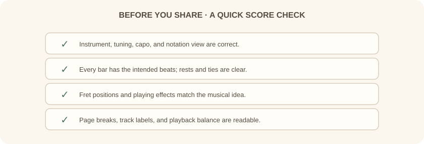
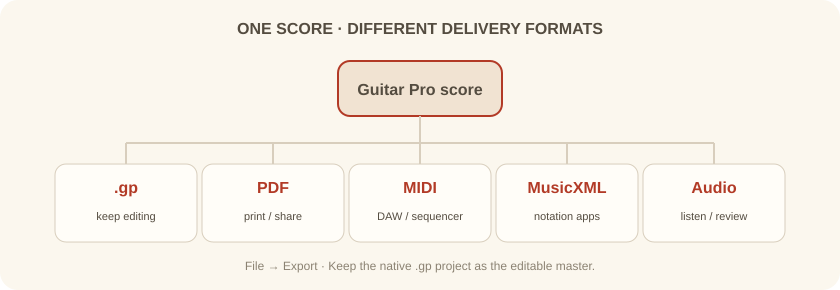

دورهٔ فرعی · Guitar Pro · جلسهٔ ششم از شش
در پایان، پارتیتور را برای خواندن و اجرا مرتب میکنیم، خطاهای مهم را میگیریم و قالب مناسب برای ویرایش، چاپ، نرمافزارهای دیگر یا شنیدن را انتخاب میکنیم.
بخش اول
پیش از خروجی، نام مسیرها را روشن کن و ترتیب سازها را مرتب کن. در بخش Stylesheet میتوان اندازهٔ صفحه، جهت، حاشیهها و فاصلههای پارتیتور را تنظیم کرد. در صورت نیاز، نمایش کوک یا نمودار آکورد را هم در صفحه فعال کن.
پارتیتور را هم در نمای صفحه و هم در نمای پخش ببین. در نمای صفحه، شکست سیستمها و خوانایی چاپ مهم است؛ در نمای پخش، حرکت زمانی و شنیدن مسیرها را بررسی میکنی.

بخش دوم
این موارد را یکییکی بررسی کن: کوک و تعداد سیمها، میزاننمای درست، جمع ضربهای هر میزان، جای نتها روی تبلچر، علائم اجرایی، نام مسیرها و سطح صدای نسبی سازها.
اگر خروجی چاپی میگیری، همهٔ صفحهها را مرور کن: مطمئن شو میزانها بریده نشدهاند، عنوان و نام سازها دیده میشوند و نتها اندازهٔ خوانا دارند.
بخش سوم
فایل .gp نسخهٔ اصلی و قابل ویرایش است. از File → Export قالب بعدی را براساس کاربرد انتخاب کن: PDF برای چاپ، MIDI برای بردن نتها به DAW، MusicXML برای نرمافزار نتنویسی، و فایل صوتی برای گوشدادن یا ارسال دمو.
PNG و SVG برای تصویر صفحه یا نمودار مناسباند. در خروجی MIDI، مسیرهای بیصدا ممکن است کنار گذاشته شوند؛ اگر مسیر خاصی را لازم داری، پیش از خروجی وضعیت Mute آن را بررسی کن.

بخش چهارم
یک ریف هشت میزانی برای گیتار بساز، آن را در تبلچر و نت استاندارد نمایش بده، دستکم دو علامت اجرایی اضافه کن، با مترونوم پخش کن و یک بخش را برای تمرین حلقه کن.
در پایان، فایل اصلی .gp را همراه با یک PDF و یک فایل MIDI ذخیره کن. نامگذاری فایلها را یکسان نگه دار تا نسخهها با هم اشتباه نشوند.